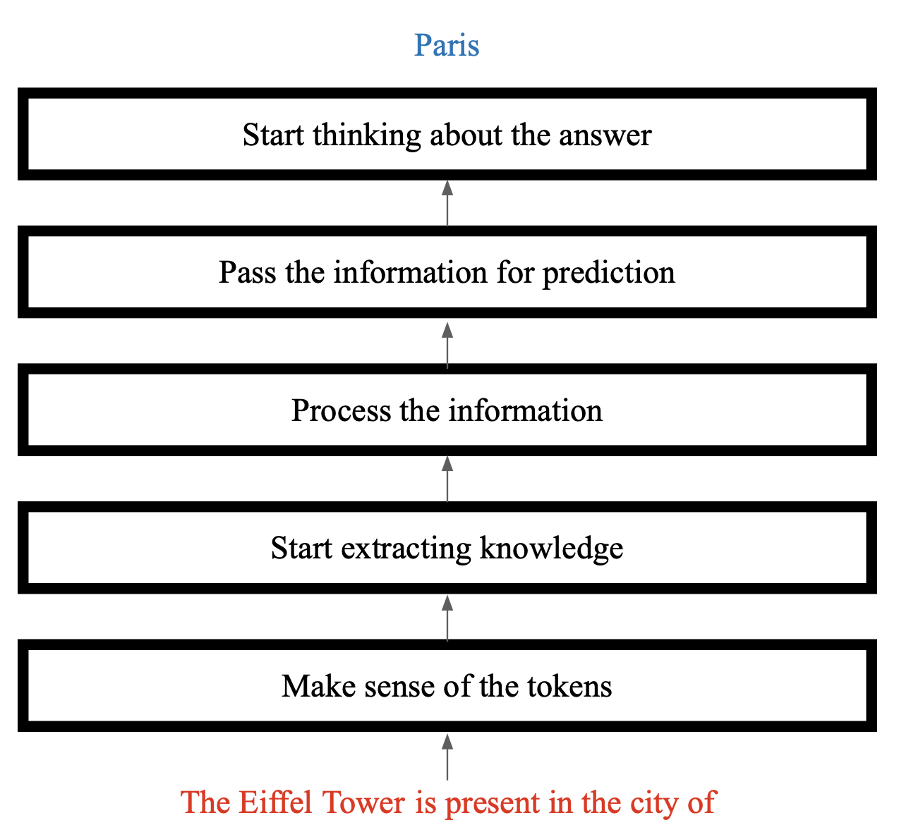
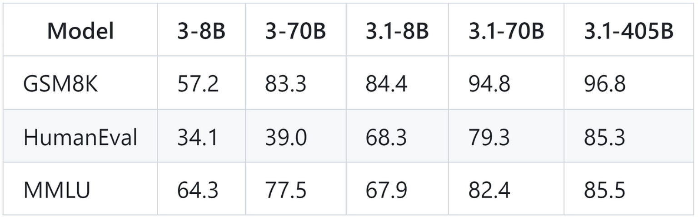
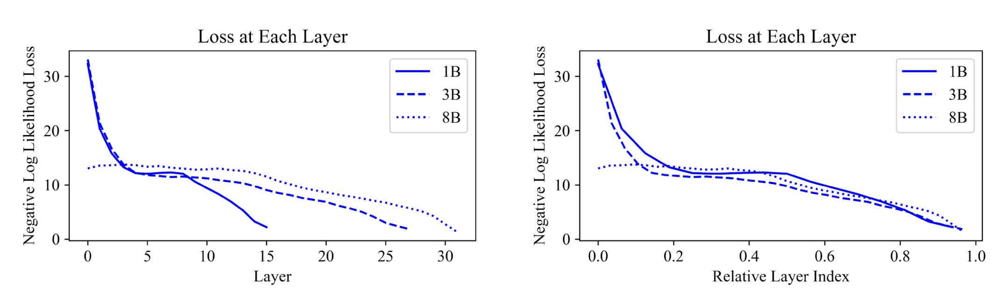
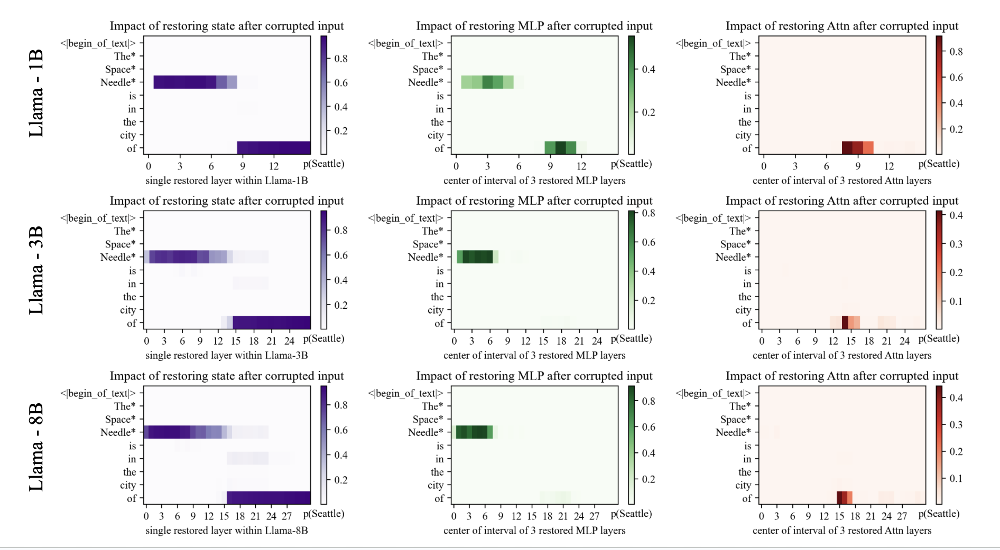
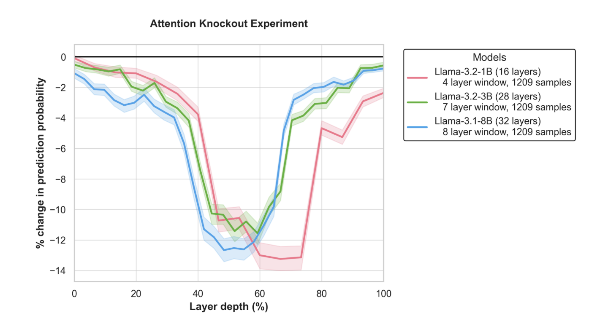
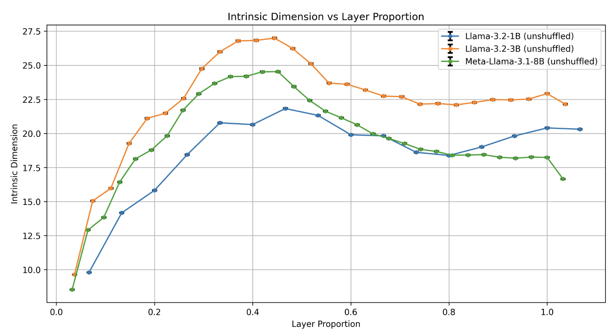
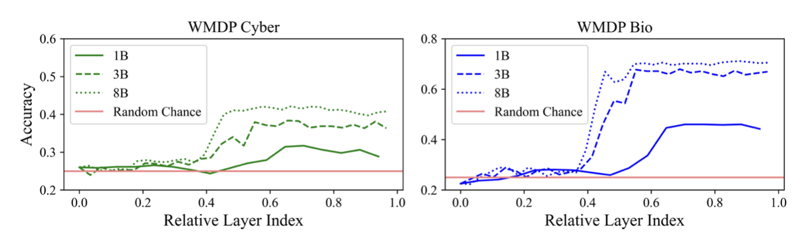
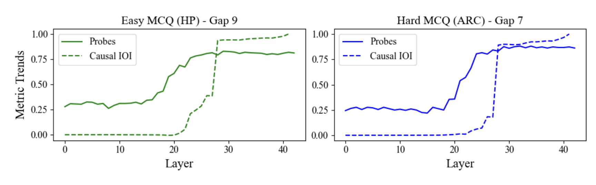

With Large Language Models (LLMs), we have been seeing the trend where larger models show emergent and better capabilities. In this project, we ask the question: "What are the added layers being used for by an LLM?". We first establish a model of mechanistic information flow in the models, we call "stages", and investigates the internal mechanisms of LLMs and how they change as model size increases. Specifically, we will look at the following questions:
- What are the early layers in LLMs doing?
- Where are the facts localized in models?
- At what layers does the model transfer the knowledge of fact?
- When does the model have enough information to know the answer?
- Where is "processing" really happening in the models?
Related Work
This project builds upon a rich body of research dedicated to understanding the inner workings of LLMs. Seminal works have explored attention mechanisms and their role in passing extracted information [1], the emergence of factual knowledge representation [2], and the development of techniques to probe and analyze these models [3]. Our work contributes to this ongoing discourse by providing a comparative analysis of different LLM sizes and applying these methods to unravel the complexities of their internal representations and processing.
Methods
Logit Lens
Visualize probability distribution over vocabulary tokens at each layer of the model, tracking prediction evolution through the network.
Logit Lens Loss
Examine loss changes at each layer to understand how the model refines its understanding and converges to final predictions.
Causal Tracing
Identify specific layers and components responsible for predictions through systematic input manipulation.
Attention Knockout
Assess contribution of attention mechanisms by selectively disabling them at different layers.
Intrinsic Dimension Analysis
Quantify complexity of information representation at each layer to understand compression and expansion patterns.
Probes
Measure accuracy of intermediate representations to reveal when sufficient information for task execution is acquired.
Causal Intervention Effect
Quantify impact of input feature alterations on predictions to identify causal relationships.
Representational Similarity Analysis
Analyzing layer similarities across different model sizes reveals patterns in how representations evolve through the network.
RSA Methodology
Representational Similarity Analysis (RSA) is a multivariate technique that compares diverse data types by examining shared patterns in their similarity matrices. Originally proposed by Kriegeskorte et al. [7] to link brain activity patterns to computational models and behavior, RSA works by subjecting the brain/model to different stimuli and extracting activity patterns. Pairwise correlations are computed to create a dissimilarity matrix (RDM), which captures the representational geometry of the data. This enables comparison across different data types and models.

Computation of the Representational Dissimilarity Matrix (RDM).
How does RSA apply to LLMs?
Li et al. [8] used RSA to study structural similarity between LLMs and neural responses. Yousefi et al. [9] used TSA to decode task-critical information from model representations without using parameterized probes. This technique helps compare representational geometry across LLM sizes and layers to reveal computational phases.
Methodology for Layer-wise RSA in LLMs
The following methodology outlines a structured approach to analyze layer-wise representational structures in LLMs using RSA:
- Input Processing: Start with a set of N sentences or questions from domains like biology and cybersecurity. Feed these inputs into LLMs (e.g., Llama 1B, 3B, 8B) to ensure diversity in both input complexity and model capacity [1].
- Layer-Wise Activation Capture: Extract neural activations (hidden states) for each input at each layer L. This provides a layer-by-layer snapshot of how the model's internal representations evolve [2].
-
Representation Processing:
- Mean Pooling: Average token-level activations per input to produce a single vector representation [3].
- Normalization: Optionally normalize these vectors to ensure that differences in vector magnitude do not unfairly influence similarity measurements.
-
RDM Generation: Compute pairwise similarities between the processed input vectors. Convert these similarities into dissimilarities (
RDM = 1 - similarity) to form an N×N Representational Dissimilarity Matrix for each layer [4]. - Vectorizing RDMs: Extract the upper-triangular portion of each RDM and flatten it into a vector [5].
- Layer Similarity Analysis: Compare these RDM-derived vectors across layers (and across models) to identify patterns and trends [6].
Our Hypothesis
We hypothesis the following stages when an LLM processes a text to predict the next token: 
Analysis
Current LLM Performance
The current trend in large language models (LLMs) is to scale up existing models by increasing the number of parameters. As models get larger, they seem to perform better on various tasks [4, 5]. It is interesting to see that the metrics show only 2 points increase from 70B to 405B. But this does not reflect the emergent capabilties in the 405B (huh .. i wonder what it says about the evaluations we do)
What are the early layers doing?
We find an interesting artifact, smaller models repeat the input token as "next token" at early layers. Larger models, however, do not have this effect at early layers. At this point, we are unclear if this artifact is infact from the model or from the logit lens methodology itself. We aim to explore this further.
We scale up this experiment with wiki-10k prompts dataset [6] and compare the cross entropy between the logit lens distribution of the layer and the actual output distribution of the model. We see similar effect that larger models do not repeat the same input token at earlier layers
Where are the facts stored in LLMs?
We follow the works on Meng et. al [2] to trace the knowledge storage in LLMs and specifically on models with varying sizes. We find that all the model sizes stores the facts almost at the same relative layer depths.
But, when is this extracted information transferred through tokens?
Once the model extracts the facts or knowledge about the input prompt, it has to, at some point, transfer this information to the location where the model needs this information to make a decision of the next token. For this, we conduct an attention knockout experiment [1], where we block attention from subject tokens to the final tokens at every layer and plot the change in the output distribution. We find that all the model sizes almost drop the accuracies at 40% through 70% of the layer depths. This suggests that these middle layers transfer information.
When does the model use most of its dimensions to process information?
Okay, the model knows about the fact, transfers it to the token for prediction. Its a good time to ask a generic question - "how does the model process all this information at each layer?". For this, we conduct an intrisic dimensionality experiment and find that at the same 40% layer depth for all models, they start using high dimensions to process information.
After the processing, when does the model know about the answer?
Now that we know about the information processing, we now explore when the model has enough information to know the answer for next token. We do probing experiments similar to [3] and find a very interesting artifact!! Bigger models know the answer at the beginning layers while smaller models know the answer almost after the half way.
What? Is it true that larger models know answer way early?
But this doesnot align with what we have seen so far! So we look at the causal importance of these layers. Are these layers really being used by the model? We found - NO! There is a good gap of 7-9 layers between when the model has enough information to when it actually uses it.
How do representations evolve across layers and model sizes?
Layer-wise Similarity Analysis
Llama 1.2B
Llama 3.2B
Llama 8B
Cross-Model Representation Comparison
8B vs 1B Comparison
8B vs 3B Comparison
3B vs 1B Comparison
The RSA analysis reveals distinct processing stages across model sizes, with early layers showing high similarity, middle layers displaying diverse patterns, and later layers converging again. Cross-model comparisons demonstrate that different sized models develop analogous representations at similar relative depths, with stronger similarity between larger models.
Discussion
There are few observations in this work which we find very interesting and worth investigating more
- Why is there a gap between probing accuracies and causal importance? - We believe this could be something to do with probes. We know probes can be sensitive to any seperable distributions. It could be that probes are catching this effect where the information just starts popping up. Another thought is how causal interventions work. There is a strong peak in importance, why does this happen?
- How do different training datasets and objectives influence the development of computational phases within LLMs? - We have tested on very limited datasets and models. There is an oppurtunity to expand this set and observe
- Can we leverage insights from RSA to develop more efficient and interpretable LLM architectures?
Citations
- Geva, M., Bastings, J., Filippova, K., & Globerson, A. (2023). Dissecting recall of factual associations in auto-regressive language models. arXiv preprint arXiv:2304.14767.
- Meng, K., Bau, D., Andonian, A., & Belinkov, Y. (2022). Locating and editing factual associations in GPT. Advances in Neural Information Processing Systems, 35, 17359-17372.
- Alain, G. (2016). Understanding intermediate layers using linear classifier probes. arXiv preprint arXiv:1610.01644.
- Dubey, A., Jauhri, A., Pandey, A., Kadian, A., Al-Dahle, A., Letman, A., ... & Ganapathy, R. (2024). The llama 3 herd of models. arXiv preprint arXiv:2407.21783.
- Team, G., Riviere, M., Pathak, S., Sessa, P. G., Hardin, C., Bhupatiraju, S., ... & Garg, S. (2024). Gemma 2: Improving open language models at a practical size. arXiv preprint arXiv:2408.00118.
- NeelNanda/wiki-10k · Datasets at Hugging Face. (n.d.). https://huggingface.co/datasets/NeelNanda/wiki-10k
- Kriegeskorte, N., Mur, M., & Bandettini, P. (2008). Representational similarity analysis - connecting the branches of systems neuroscience. Frontiers in Systems Neuroscience, 2, 4.
- Li, J., Karamolegkou, A., Kementchedjhieva, Y., Abdou, M., Lehmann, S., & Søgaard, A. (2023). Structural similarities between language models and neural response measurements. arXiv. https://arxiv.org/pdf/2306.01930v2
- Yousefi, S., Betthauser, L., Hasanbeig, H., Millière, R., & Momennejad, I. (2023). Decoding in-context learning: Neuroscience-inspired analysis of representations in large language models. arXiv. https://arxiv.org/abs/2310.00313